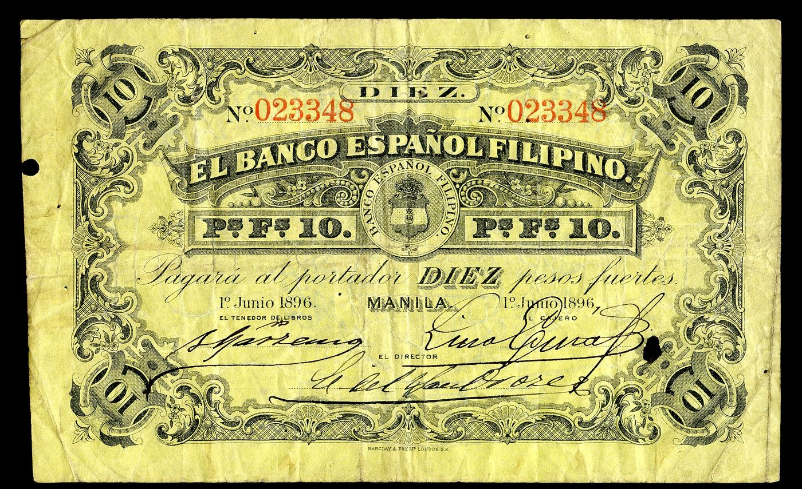
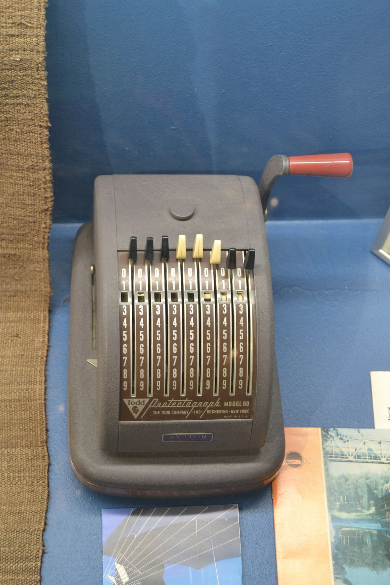

Itapat ang print sa tseke.
Isang beses lang ito kada printer. Kailangan mo ng ilang minuto, isang bond paper, at isang tseke mo. Pagkatapos, tatapat na ang bawat tseke na ipi-print mo.

Walong hakbang, isang beses lang
-
Buksan ang Calibration
Sa main window ng app, i-click ang Calibration. Bubukas ang Alignment & Calibration Engine, kung saan nakalista ang bawat field at ang X at Y nito sa pulgada.
-
Piliin ang Paper Feed Mode
Letter Top Feed (Recommended) kung nasa itaas na 3 pulgada ng letter-size na pahina ang tseke. Physical Cheque (8.75x3.0) kung tseke mismo ang ipapasok mo sa printer.
-
I-print ang test sheet sa bond paper
I-click ang Print Test Sheet. Ise-save muna nito ang settings, tapos magpi-print ng ALIGNMENT TEST SHEET: gray na kahon na kasinlaki ng tseke at sample na laman. Plain bond paper muna, hindi ang tseke.
-
Ipatong sa tseke at itapat sa ilaw
Ilagay ang test sheet sa ibabaw ng totoong tseke, at itapat ang dalawa sa ilaw o bintana para makita mo kung saan tumama ang bawat field.
-
Sukatin ang layo
Gamit ang ruler, sukatin kung ilang pulgada ang layo ng print sa linya ng tseke, pahalang at patayo. Halimbawa: 0.05 pulgada pakanan at 0.03 pulgada pababa.
-
Ilagay sa Global Fine Offset
Inuurong nito ang lahat ng field nang sabay. Ang +X ay pakanan at ang +Y ay pataas. Kaya kung pakanan ng 0.05 ang print, ilagay ang X −0.05. Kung pababa ng 0.03, ilagay ang Y +0.03.
-
Ayusin ang isang field o ang petsa kung kailangan
Kung isa lang ang hindi tumapat, baguhin ang X at Y nito sa table: Date, Payee Name, Numeric Amount o Amount in Words. Para sa mga kahon ng petsa, ang Date Pitch ang layo ng bawat digit at ang Dash Gap ang puwang sa pagitan ng buwan, araw at taon.
-
I-print ulit, saka i-save
Ulitin ang test sheet hanggang tumapat ang lahat, saka i-click ang Save Calibration. Naka-save ito sa PC mo, kaya hindi mo na ito uulitin hangga't pareho ang printer.
Subukan: itapat ang print.
Ganito ang gagawin mo sa app. Gamitin ang mga button, o ang arrow keys kapag naka-focus ang tseke, hanggang tumapat ang print sa mga linya.
Global Fine Offset
Pakanan ng 0.08 at pababa ng 0.05 pulgada ang print.
Dati, mano-mano.
Sa makinang Protectograph at sa makinilya, itinatapat ng kamay ang tseke sa bawat pasok nito. Sa app, isang beses mo lang itong ise-set, at pareho na ang puwesto ng bawat print.

Mga default ng app
Ang X ay sinusukat mula sa kaliwang gilid ng tseke, at ang Y mula sa ibaba, sa pulgada (1 pulgada = 72 points). Kung nagulo ang settings, ibinabalik ng Reset ang mga ito.
| Field | X (in) | Y (in) |
|---|---|---|
| Date | 6.25 | 2.65 |
| Payee Name | 2.15 | 2.05 |
| Numeric Amount | 6.20 | 1.95 |
| Amount in Words | 1.70 | 1.70 |
| Global Fine Offset | 0.00 | 0.00 |
| Date Pitch / Dash Gap | 0.190 | 0.110 |
| Font | Helvetica-Bold, 10 | |
- I-print sa Actual size. Kung mula sa Preview PDF ka magpi-print, piliin ang Actual size o 100%, hindi Fit to page, para hindi lumiit ang print.
- Parehong paraan ng pagpasok ng papel. Pareho dapat ang tray at direksyon ng papel sa test sheet at sa totoong tseke.
- Nagpalit ng printer? Ulitin ang calibration, dahil iba-iba ang margin ng bawat printer.